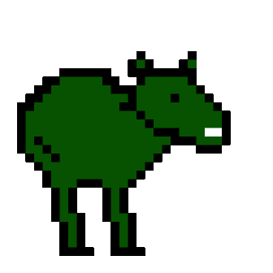

Mais informações sobre pokes
Galo cururu

STATUS: ATK:8 HP:70 ST:16 DEF:5
Lore do galo cururuLore do galo cururuLore do galo cururuLore do galo cururuLore do galo cururuLore do galo cururuLore do galo cururu Lore do galo cururuLore do galo cururuLore do galo cururuLore do galo cururuLore do galo cururuLore do galo cururuLore do galo cururu Lore do galo cururuLore do galo cururuLore do galo cururuLore do galo cururuLore do galo cururuLore do galo cururuLore do galo cururu Lore do galo cururuLore do galo cururuLore do galo cururuLore do galo cururuLore do galo cururuLore do galo cururuLore do galo cururu
Papaco
STATUS: ATK:9 HP:120 ST:12 DEF:6
Lore do galo cururuLore do galo cururuLore do galo cururuLore do galo cururuLore do galo cururuLore do galo cururuLore do galo cururu Lore do galo cururuLore do galo cururuLore do galo cururuLore do galo cururuLore do galo cururuLore do galo cururuLore do galo cururu Lore do galo cururuLore do galo cururuLore do galo cururuLore do galo cururuLore do galo cururuLore do galo cururuLore do galo cururu Lore do galo cururuLore do galo cururuLore do galo cururuLore do galo cururuLore do galo cururuLore do galo cururuLore do galo cururu
Pirarocu

STATUS: ATK:6 HP:80 ST:26 DEF:8
Lore do galo cururuLore do galo cururuLore do galo cururuLore do galo cururuLore do galo cururuLore do galo cururuLore do galo cururu Lore do galo cururuLore do galo cururuLore do galo cururuLore do galo cururuLore do galo cururuLore do galo cururuLore do galo cururu Lore do galo cururuLore do galo cururuLore do galo cururuLore do galo cururuLore do galo cururuLore do galo cururuLore do galo cururu Lore do galo cururuLore do galo cururuLore do galo cururuLore do galo cururuLore do galo cururuLore do galo cururuLore do galo cururu
Ashes
STATUS: ATK:11 HP:60 ST:20 DEF:5
Lore do galo cururuLore do galo cururuLore do galo cururuLore do galo cururuLore do galo cururuLore do galo cururuLore do galo cururu Lore do galo cururuLore do galo cururuLore do galo cururuLore do galo cururuLore do galo cururuLore do galo cururuLore do galo cururu Lore do galo cururuLore do galo cururuLore do galo cururuLore do galo cururuLore do galo cururuLore do galo cururuLore do galo cururu Lore do galo cururuLore do galo cururuLore do galo cururuLore do galo cururuLore do galo cururuLore do galo cururuLore do galo cururu